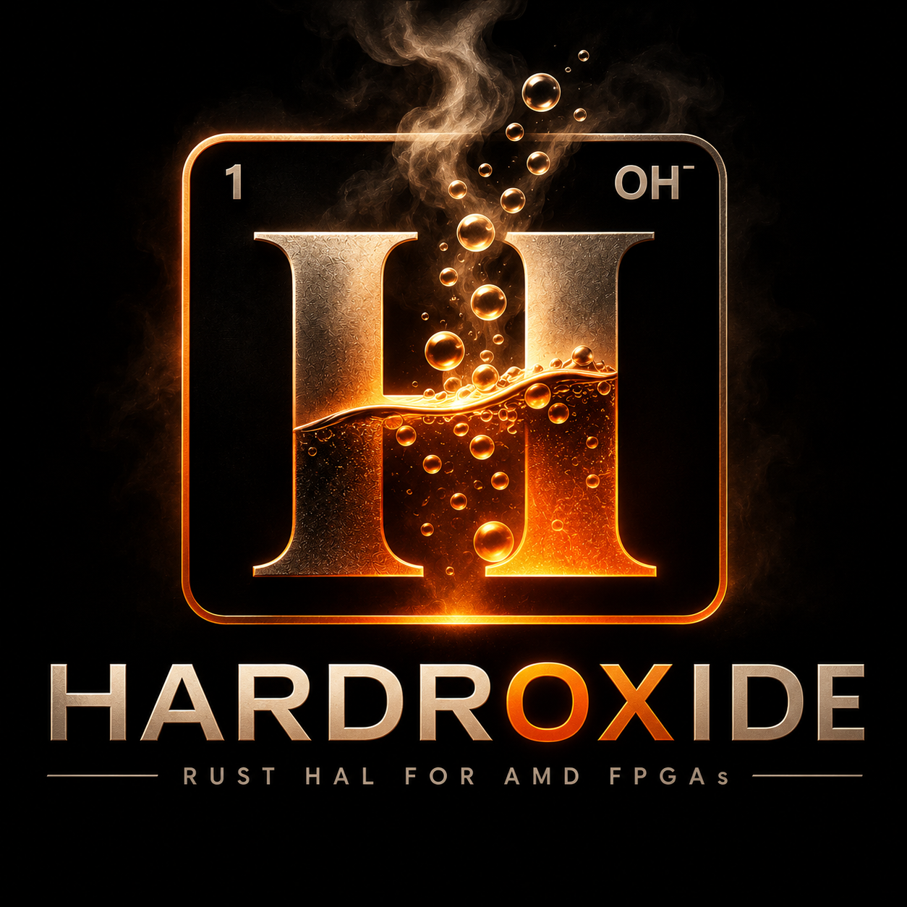

Turn a Vivado XSA into a typed Rust HAL crate: a Rust counterpart to the PYNQ overlay framework. Run it under Linux, on bare metal, or on a real-time kernel.
design.xsa --> hardroxide generate --> my_design/ (a Cargo crate)
bitstream/design.bin embedded
src/pac.rs registers, interrupt lines
src/ips.rs typed driver per IP instance
examples/ board checks
let d = my_design::Design::load()?; // program the PL, set clocks, map the IP
d.axi_gpio_0.write(Channel::One, 0b1010)?; // a typed driver per IP instance
d.vadd_0.set_a(40)?; d.vadd_0.start()?; // named registers for HLS kernels--platform linux. Userspace on the PS with /dev/mem or UIO, interrupts, DMA buffers, optional async. Validated on a PYNQ-Z2.
--platform baremetal. No OS: startup, GIC, timers, UART, MMU and caches, with no third-party dependencies. Run it over JTAG or from a BOOT.BIN.
--platform rtos. A priority-preemptive kernel with semaphores, priority-inheritance mutexes and queues, for 10 ms control loops.
| You want to | Go to |
|---|---|
| see it work with real board output | Thirteen tutorials, from LEDs to DMA to a 70-IP design |
| use it on your own design | The workflow and exporting an XSA |
| look something up | CLI reference and the rustdoc API reference |
| understand the design | Design notes and ADRs |
| know what is verified | Verification status |
Parse XSA / HWH hardware handoff into a typed design model.
Generate a Rust HAL crate from a parsed XSA.
The hardroxide command-line tool.
Curated drivers for Xilinx IP, keyed by VLNV.
MMIO backends: /dev/mem, UIO and mock.
Bitstream loading and PL clock control.
DMA buffers with ownership tracking.
PL interrupt waiting, blocking and async.
Zynq-7000 bare-metal support: startup, GIC, timers, UART, MMU.
The real-time kernel for the Cortex-A9.